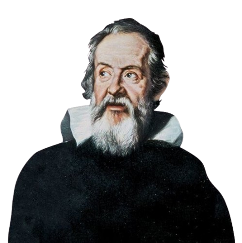

گالیلو گالیله در سال ۱۵۶۴ در شهر پیزای ایتالیا متولد شد. او در ابتدا به اصرار پدرش به تحصیل در رشته
پزشکی پرداخت، اما طولی نکشید که شیفته ریاضیات و فیزیک شد و دانشگاه را بدون مدرک پزشکی رها کرد تا به
دنبال اشتیاق واقعی خود برود. گالیله ذهنی به شدت کنجکاو و پرسشگر داشت و هیچ فرضیهای را بدون آزمایش علمی
قبول نمیکرد؛ همین ویژگی او را به «پدر علم تجربی مدرن» تبدیل کرد.
نقطه عطف زندگی گالیله در سال ۱۶۰۹ رقم خورد، زمانی که او خبر ساخت یک ابزار بزرگنمایی ساده در هلند را
شنید. او بدون دیدن آن ابزار، خودش دست به کار شد و تلسکوپی با قدرت بسیار بیشتر ساخت و برای اولین بار آن
را رو به آسمان شب گرفت. مشاهدات او از ماههای سیاره مشتری، فازهای سیاره زهره و کوههای روی ماه،
بنیانهای اخترشناسی آن زمان را فرو ریخت.
این کشفیات شواهد محکمی برای اثبات نظریه کوپرنیک (چرخش زمین به دور خورشید) بودند؛ ادعایی که کاملاً با
باورهای سنتی کلیسای کاتولیک در تضاد بود. در سال ۱۶۳۳، گالیله به دادگاه تفتیش عقاید احضار شد. او برای
نجات از اعدام و سوزانده شدن، مجبور شد علناً از ادعای خود دست بکشد. دادگاه او را به حبس ابد در خانه محکوم
کرد. گالیله ۸ سال پایانی عمر خود را در حصر خانگی و در نابینایی کامل سپری کرد، اما هرگز از نوشتن دست
برنداشت و کتابهای مخفیانه او به خارج از ایتالیا قاچاق و چاپ شدند تا اینکه در سال ۱۶۴۲ چشم از جهان
فروبست.

بزرگ ترین دستاورد های گالیله
انقلاب در نجوم و رصد آسمان
گالیله با ارتقا و ساخت یک تلسکوپ قدرتمند، برای اولین بار قمرهای سیاره مشتری و فازهای سیاره زهره را کشف کرد.
این مشاهدات تجربی ثابت کرد که همه چیز در جهان به دور زمین نمیچرخد و نظریه خورشیدمرکزی کوپرنیک کاملاً درست
است.
پایه گذاری فزیک حرکت و سقوط آزاد
او با آزمایشهای معروف خود (مانند رها کردن اشیاء از برج پیزا) ثابت کرد که برخلاف باورهای گذشته، اشیاء با
جرمهای متفاوت در صورت نبود مقاومت هوا، با سرعت یکسانی سقوط میکنند. این کشف بزرگ، سنگ بنای مکانیک کلاسیک و
قوانین حرکت شد.
ابداع و تثبیت روش علمی تجربی
گالیله علم فیزیک را از فلسفه محض و حدس و گمانهای ذهنی جدا کرد. او اصرار داشت که هر تئوری و نظریه علمی در
جهان، حتماً باید با انجام آزمایشهای مکرر، اندازهگیریهای دقیق و فرمولهای ریاضی سنجیده و اثبات شود.
کشف مفهوم لختی یا اینرسی
او درک کرد که یک جسم در حال حرکت، تمایل دارد به حرکت خود در یک خط راست و با سرعت ثابت ادامه دهد، مگر اینکه
یک نیروی خارجی (مثل اصطکاک یا جاذبه) آن را متوقف کند. این مفهوم بعدها به عنوان قانون اول حرکت نیوتن ثبت شد.